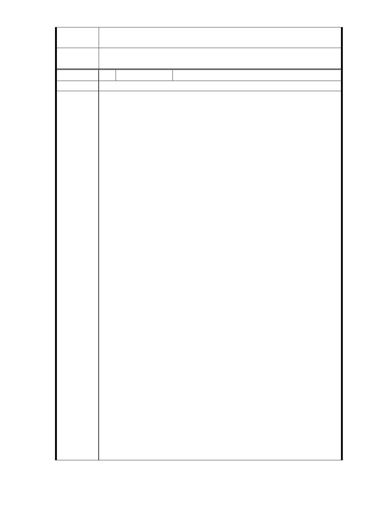

專
結
案
小
組
論
相關建議請市府依回應意見協辦。
委
決
員
會
議
依專案小組結論辦理。
編 號 36 陳情人 魏守正
建 議 位 置 雙溪左岸婆婆橋至自強橋段
各位長官、委員：
我的名字叫魏守正，家住台北市士林至善路二段 266 巷 62 號（青
青農場）旁的小屋，和家人溝通後代表家人向諸位長官及委員提
出陳情與建議，先祖父於民國七十五年去世，依當時的稅法有遺
產稅的情況，當時該土地的地目為國家公園預定地，公告現值為
（199,520,517）近新台幣兩億元，依法我二叔及家父得繳交數仟
萬元才得辦理繼承，無錢繳交不辦理及被國稅局罰款且限制出境
，再加上政府一再宣稱所有應徵收且未徵收之公共設施保留地一
定要在民國七十九年前完成〝全面徵收〞於是舉債繳稅及割地抵
稅才了事。五歲時家母和二嬸帶著全家老小十二口，在故宮博物
院前圓環賣愛玉冰、臭豆腐補貼家用賴以維生。
我們家族在此居住了四代人超過八十年，山崩的事情發生，外雙
溪的流向像一道眉毛往外微彎，我家的土地位於內側，在者內側
的土地遠高於外側，假如真有淹水的情形發生也必會溢出外側河
岸，直撲至善路二段然後順勢而下直到至善路一段，然而這樣的
情況從未發生過。
這裡的環境實在適合人類居住，可媲美世界任何一個地方，除了
陳情理由
266 巷內的婆婆橋以外尚有 256 巷的道路（已經徵收）可另建一橋
直通河的對岸，在土地的最終處可建道路或便橋直通自強隧道或
故宮路，然這些費用都不必政府支出，可由開發商提出細部計畫
及負擔所有費用，則此案多利而無弊。
1. 解決陳積已久的民怨，畢竟繳了重稅數十年來所有家人為了償
還繳交遺產稅債務付出沉重的代價。
2. 使土地能有更好的利用及有更清新的環境，若准予低密度的開
發，限定了居住人口數量，交通、人文、環境一定優於目前的
現狀。
3. 政府不用花到一分一毫的錢，又增加國庫的稅收且無圖利任何
人的問題，有相同情況者都可比照辦理。
民國八十五年我們曾經向臺北市政府提出陳情，願意無償捐出
山坡地，以換取平地部分為第二類住宅區，這樣的建議且得到都發
局原則同意的結果，期間開會多次，會勘多次，最後因堤線劃定是
內政部的權責…反正就是踢皮球式的推拖。又過了十五年毫無結果
心灰意冷，直至最近收到臺北市政府的一紙公文心中又燃起無限希
望。
各位都是社會賢達，該領域中菁英及佼佼者，諸位先進所做的
決定及決策將影響台灣土地發展、都市再造。提昇人民生活品質決
- 48 -